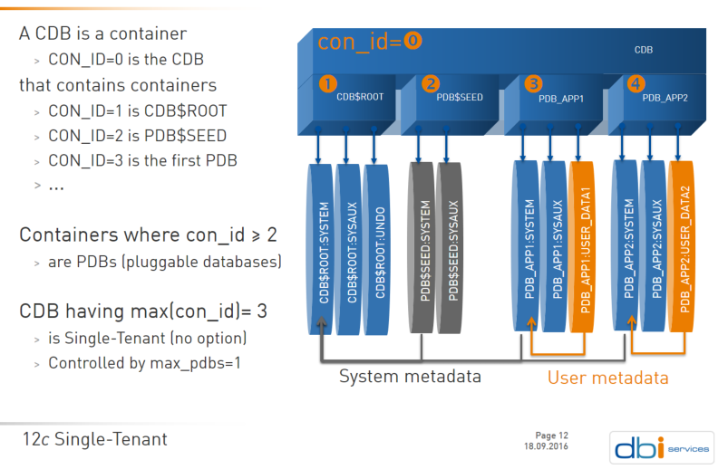

This was first published on https://www.dbi-services.com/blog/oracle-12cr2-max_pdbs/ (2016-11-11)
Republishing here for new followers. The content is related to the versions available at the publication date.
.
Oracle database 12.2 is there on the Database Cloud Service, in multitenant. In EE High Performance or Extreme Performance, you have the multitenant option: you can create 4096 pluggable database (instead of 252 in 12.1). If you are in lower services, you can create only one user PDB (not counting application root and proxy PDB). If you are in Standard Edition, it’s simple: it is a hard limit. If you are in simple Enterprise Edition without option, then you have a way to be sure you stay under the limit: MAX_PDBS parameters.
A CDB is a container (CON_ID=0) that contains containers:
Here is how I show it: 
In 12.1 you have no supported way to prevent creating more than one PDB. In 12.2 you have a parameter, MAX_PDBS, which is documented as the maximum number of user created pluggable database. You you can expect it to have the maximum of 4096 but it’s actually 4098 and this is the default value:
SQL> show parameter max_pdbs
NAME TYPE VALUE
------------------------------------ ----------- ------------------------------
max_pdbs integer 4098
So to be sure, let’s create many pluggable databases.
I have one pluggable database, PDB1, opened in read-only:
SQL> show pdbs
CON_ID CON_NAME OPEN MODE RESTRICTED
---------- ------------------------------ ---------- ----------
2 PDB$SEED READ ONLY NO
3 PDB1 READ ONLY NO
And use the following script to clone them:
for i in {1..5000} ; do echo "connect / as sysdba"; echo "create pluggable database pdb$i$RANDOM from pdb1 snapshot copy;" ; echo 'select max(con_id),count(*) from dba_pdbs;' ; echo "host df -h /u01 /u02" ; done | sqlplus / as sysdbauntil it fails with:
SQL> create pluggable database pdb49613971 from pdb1 snapshot copy
*
ERROR at line 1:
ORA-65010: maximum number of pluggable databases created
Note that I use clonedb=true snapshot copy because I don’t want to fill up my filesystem:
SQL> show parameter clonedb
NAME TYPE VALUE
------------------------------------ ----------- ------------------------------
clonedb boolean TRUE
clonedb_dir string /u02/oradata/CDB1
SQL> host du -h /u02/oradata/CDB1/CDB1_bitmap.dbf
31M /u02/oradata/CDB1/CDB1_bitmap.dbf
As you see I’ve put the bitmap file outside of $ORACLE_HOME/dbs because in 12.2 we have a parameter for that. So many new features…
In addition to that I had to increase sga, processes and db_files.
Here I have my 4097 PDBs
SQL> select max(con_iount(*) from dba_pdbs;
MAX(CON_ID) COUNT(*)
----------- ----------
4098 4097which includes PDB$SEED. This means 4098 containers inside of my CDB:
SQL> select max(con_id),count(*) from v$containers;
MAX(CON_ID) COUNT(*)
----------- ----------
4098 4098SQL> set pagesize 1000 linesize 1000
select min(con_id),max(con_id),count(*),substr(listagg(name,',' on overflow truncate)within group(order by con_id),1,30) from v$containers;SQL>
MIN(CON_ID) MAX(CON_ID) COUNT(*) SUBSTR(LISTAGG(NAME,','ONOVERFLOWTRUNCATE)WITHINGROUP(ORDERBYCON_ID),1,30)
----------- ----------- ---------- ------------------------------------------------------------------------------------------------------------------------
1 4098 4098 CDB$ROOT,PDB$SEED,PDB1,PDB2105So basically you can’t reach the MAX_PDBS default with user created PDBs.
What is really cool with ‘cloud first’ is that we can test it, all on the same platform, probably hit bugs that will be fixed before the on-premises version. This is a great way to ensure that the version is stable when we will put production on it.
I have one PDB:
SQL*Plus: Release 12.2.0.1.0 Production on Thu Nov 10 12:12:25 2016
Copyright (c) 1982, 2016, Oracle. All rights reserved.
Connected to:
Oracle Database 12c Enterprise Edition Release 12.2.0.1.0 - 64bit Production
12:12:25 SQL> show pdbs
CON_ID CON_NAME OPEN MODE RESTRICTED
---------- ------------------------------ ---------- ----------
2 PDB$SEED READ ONLY NO
3 PDB1 MOUNTED
I drop it:
12:12:26 SQL> drop pluggable database pdb1 including datafiles;
Pluggable database dropped.
I set MAX_PDBS to one:
12:12:44 SQL> show parameter max_pdbs
NAME TYPE VALUE
------------------------------------ ----------- ------------------------------
max_pdbs integer 4098
12:13:24 SQL> alter system set max_pdbs=1 scope=memory;
System altered.
12:13:45 SQL> show parameter max_pdbs
NAME TYPE VALUE
------------------------------------ ----------- ------------------------------
max_pdbs integer 1
And then try to re-create my PDB:
12:13:54 SQL> create pluggable database PDB1 admin user pdbadmin identified by oracle;
create pluggable database PDB1 admin user pdbadmin identified by oracle
*
ERROR at line 1:
ORA-65010: maximum number of pluggable databases created
This is not what I expected. Let’s try to increase MAX_PDBS to two, even if I’m sure to have only one user PDB:
12:14:07 SQL> alter system set max_pdbs=2 scope=memory;
System altered.
12:14:18 SQL> create pluggable database PDB1 admin user pdbadmin identified by oracle;
Pluggable database created.
Ok. Let’s drop it and re-create it again:
12:15:20 SQL> drop pluggable database PDB1 including datafiles;
Pluggable database dropped.
12:16:02 SQL> create pluggable database PDB1 admin user pdbadmin identified by oracle;
create pluggable database PDB1 admin user pdbadmin identified by oracle
*
ERROR at line 1:
ORA-65010: maximum number of pluggable databases created
That’s bad. It seems that the previously dropped PDBs are still counted:
12:16:07 SQL> alter system set max_pdbs=3 scope=memory;
System altered.
12:16:17 SQL> create pluggable database PDB1 admin user pdbadmin identified by oracle;
Pluggable database created.
12:17:10 SQL> show pdbs;
CON_ID CON_NAME OPEN MODE RESTRICTED
---------- ------------------------------ ---------- ----------
2 PDB$SEED READ ONLY NO
3 PDB1 MOUNTED
12:18:14 SQL> drop pluggable database PDB1 including datafiles;
Pluggable database dropped.
12:18:28 SQL> create pluggable database PDB1 admin user pdbadmin identified by oracle;
create pluggable database PDB1 admin user pdbadmin identified by oracle
*
ERROR at line 1:
ORA-65010: maximum number of pluggable databases created
Probably a small bug there. Some counters not reset maybe.
I’ve dropped one PDB from the CDB where I reached the limit of 4096:
SQL> select count(*) from dba_pdbs where con_id>2;
COUNT(*)
----------
4095
I can set MAX_PDBS to 4095 if I and to prevent creating a new one:
SQL> alter system set max_pdbs=4095;
System altered.
What if I want to set it lower than the number of PDBs I have? An error message would be nice, but probably not this one:
SQL> alter system set max_pdbs=4094;
alter system set max_pdbs=4094
*
ERROR at line 1:
ORA-32017: failure in updating SPFILE
ORA-65331: DDL on a data link table is outside an application action.
Anyway, now that MAX_PDBS is set to 4095 I can’t create another one:
SQL> create pluggable database PDB2 from PDB1;
create pluggable database PDB2 from PDB1
*
ERROR at line 1:
ORA-65010: maximum number of pluggable databases created
which is the goal of this parameter and confirms that it counts the user created PDBs and not the all containers.
Here it seems that I can re-create my last PDB when I increase the MAX_PDBS:
SQL> alter system set max_pdbs=4096;
System altered.
SQL> create pluggable database PDB2 from PDB1;
Pluggable database created.
By the way, here is how the multitenant feature usage is detected:
SQL> select name feature_name,version,detected_usages,aux_count
from dba_feature_usage_statistics
where name like '%Pluggable%' or name like '%Multitenant%';
FEATURE_NAME
--------------------------------------------------------------------------------
VERSION DETECTED_USAGES AUX_COUNT
----------------- --------------- ----------
Oracle Multitenant
12.2.0.1.0 3 4096
The detected usage just means that I’m in a CDB. The AUX_COUNT tells me if I require the multitenant option. But that’s for a future blog post.
{kind=link}